This project is about a very simple topic - the tree. I have learned about tree structures in many of the data structures classes. I learned how to draw a flat, standard 2D tree when I first learned about recursion. And now, with hopefully a little bit more knowledge in computer science, it intrigues me to whether I could create a tree structure in 3D that's more realistic and more complex.
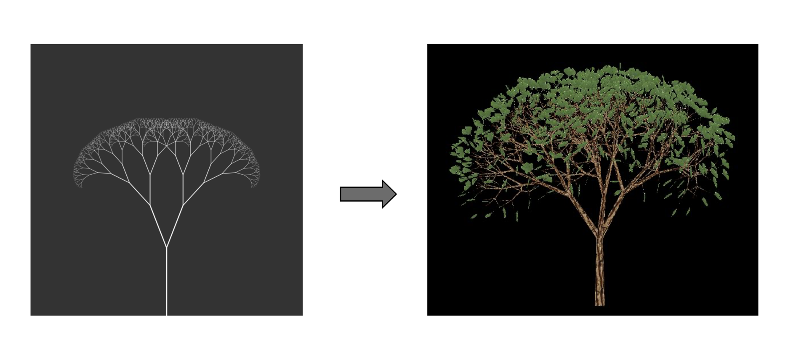To start the project, I started by reading a very nice paper on this project: Intelligent Tree Modeling Based on L-system By Ruoxi Sun, Jinyuan Jia, Marc Jaeger, recommend by my instructor Jinmo Rhee. Here's the L-System parameters introduced in their paper. And I decided to follow a similar set up for my tree system.
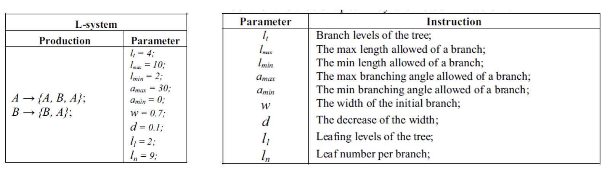Here's my set up!
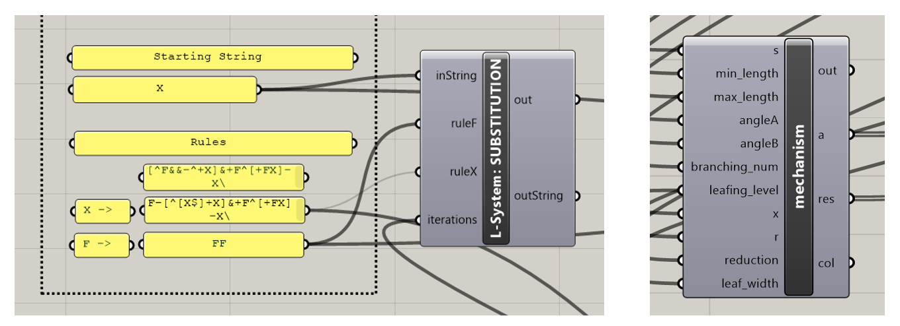The first parameter is the branching angle. This changes the angle between each branches - the larger means the tree will be more "spread out", and smaller angles represent more "upright" trees.
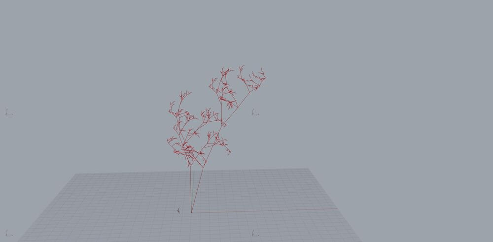This controls the total number of iterations the fractal tree algorithm runs. I'm using this factor as a way to control the complexity of the tree. The more iterations, the more complex the tree will be. Or in another way of thinking this, more iterations means more maturity of the tree.
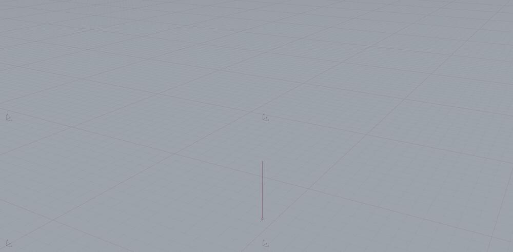This defines the decrease of length on each branch. For a tree, the "sub-branches" are usually shorter than the "parent branch". This factor controls how much shorter (or longer if you set the factor to be larger than 1) the sub-branches are.
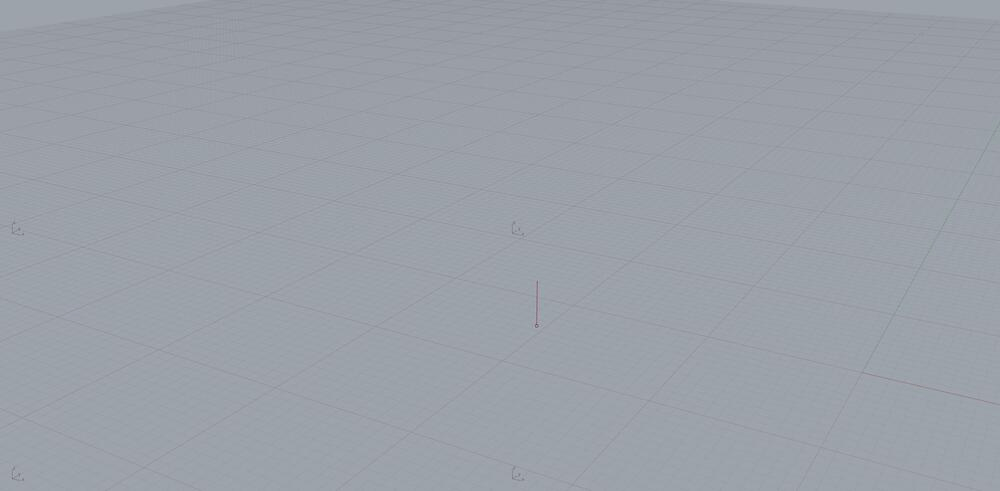This controls the number of recursive split performed, hence increasing the density of the branches. The more branches, the more dense the tree will be.
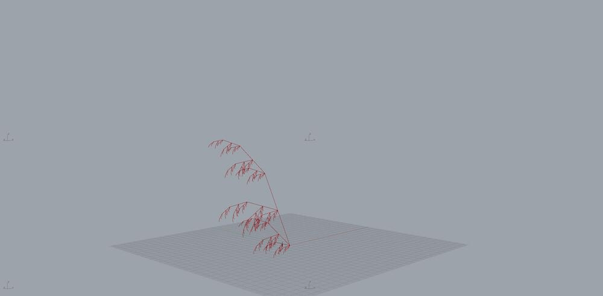This defines the minimum branch length. The animation shows fixed maximum branch length with varying minimum branch length
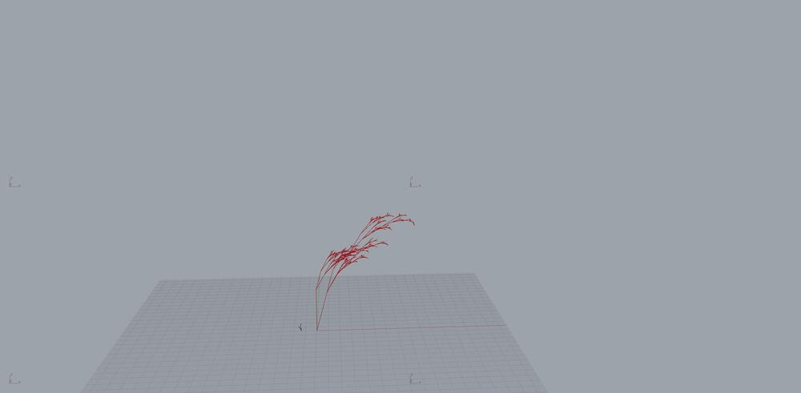This defines the minimum branch length. This is the minimum length one single branch can be. 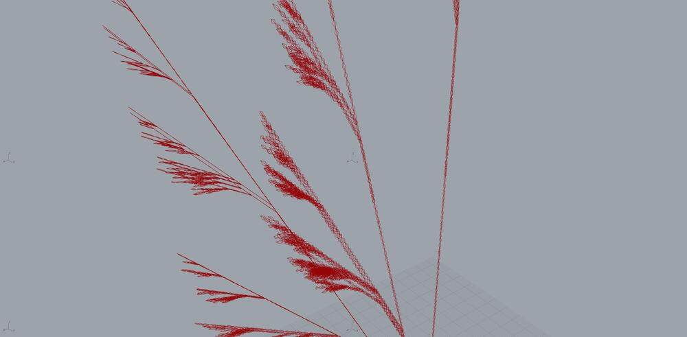
The defines the width of the leaves, super straight forward 🤓️
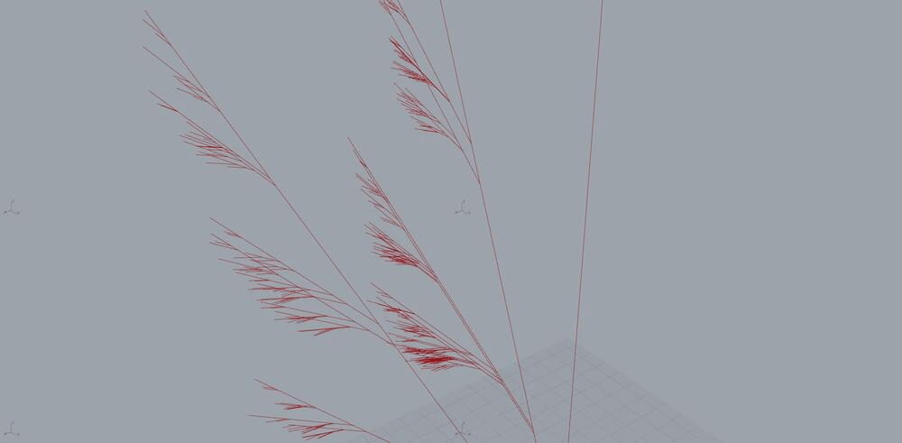The defines the radius of the branches, and how much they should reduce. In other words, this controls the thinnest and thickest radius of the branches.
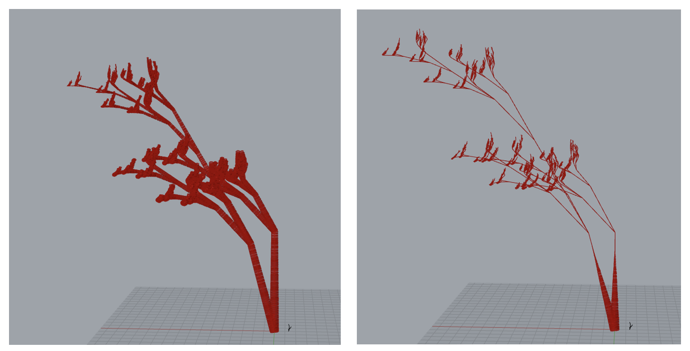By controlling different parameters, the algorithm produces very interesting and diverse results.
Controlling the leafing level decides how tall the leaves will grow. For example willow and pine trees have very different leafing levels. Changing this parameter would mimic the appearance of different trees.
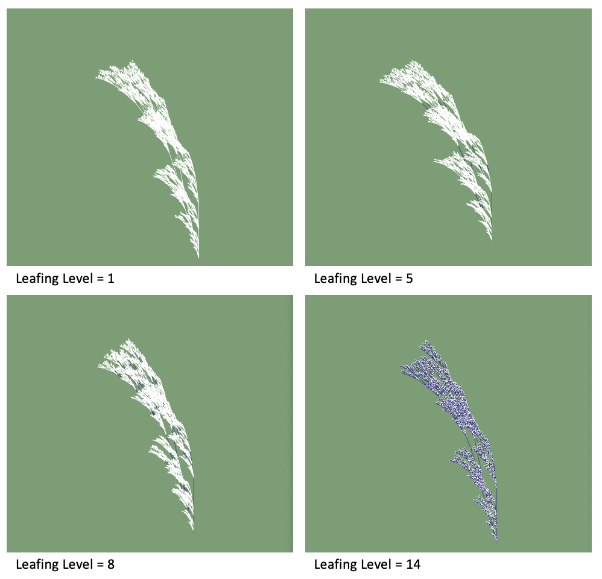Differing the rotation levels will decide the directions of the tree branches. When the min and max rotation levels are a larger range, the tree will span a larger space. In comparison, when the rotation range is smaller, the tree will be more upright, or leaning towards the same direction.
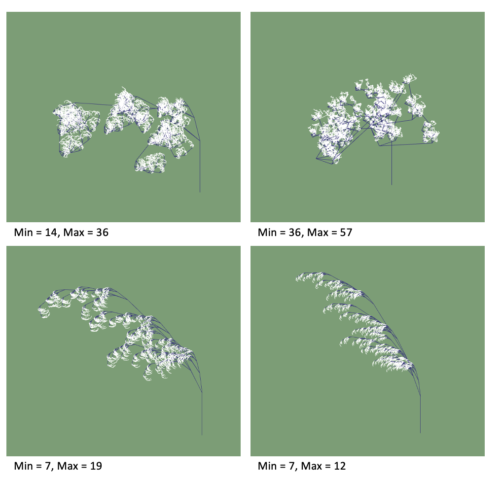Changing the rules will produce very unexpected results. Different rules seem to represent different tree species. For now, all these rules are randomly generated, I will look into this more to see what patterns I can find, and what patterns correspond to what types of trees.
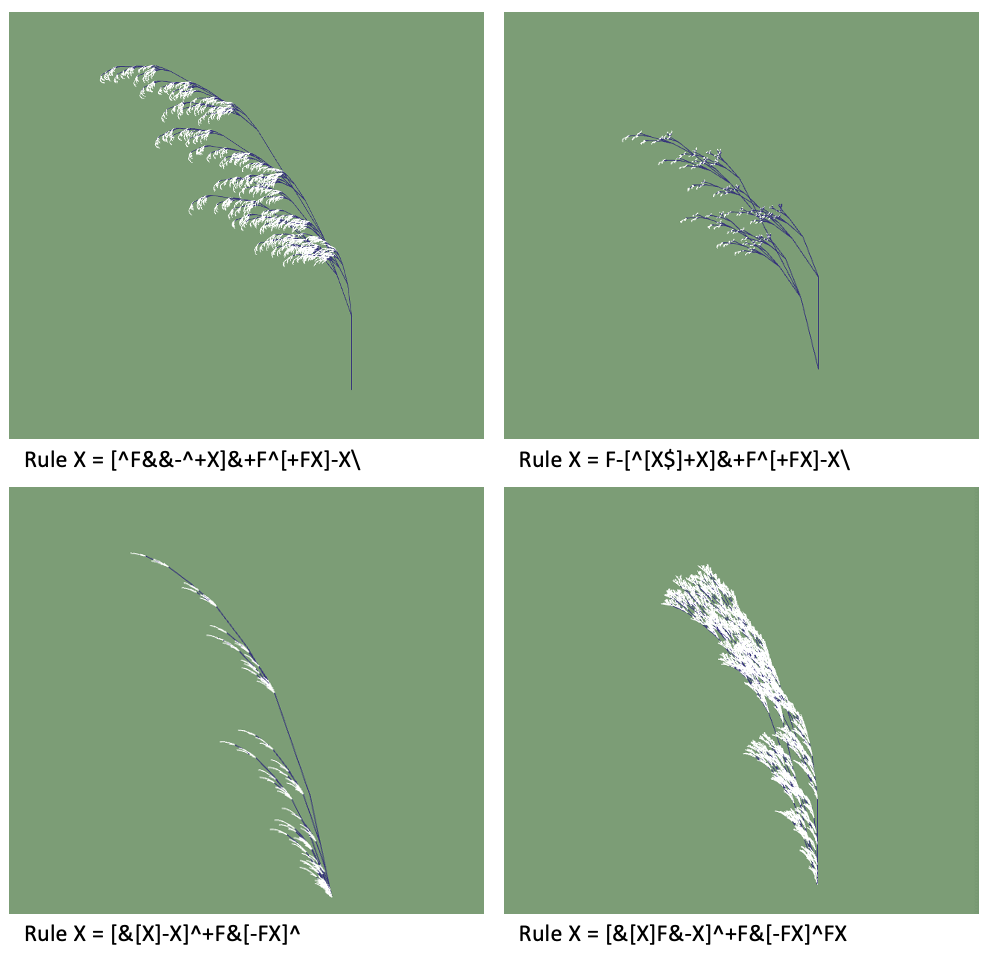And here are the results gerated from this model! They represent such different species of trees!